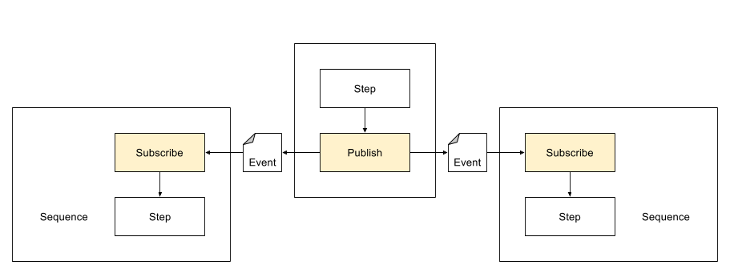

The Publish and Subscribe services are used to bind two or more sequences. This binding is achieved by choosing a common Topic on the step configs. The publish step emits events to the Topic and the subscribe steps consumes them. Any number of subscribers can use this indirection to listen to a given topic..
The topic must be specified for each Publish step. To specify the topic:
Similarly, the topic must be specified for any Subscribe step:
